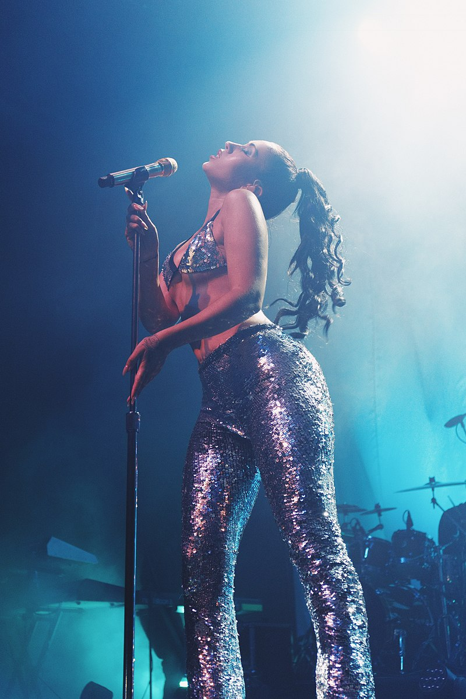

KALI UCHIS

Karly Marina Loaiza (Alexandria, Virginia, Estados Unidos; 17 de julio de 1994),1conocida artísticamente como Kali Uchis, es una cantautora, productora, actriz, directora, diseñadora y empresaria estadounidense-colombiana.